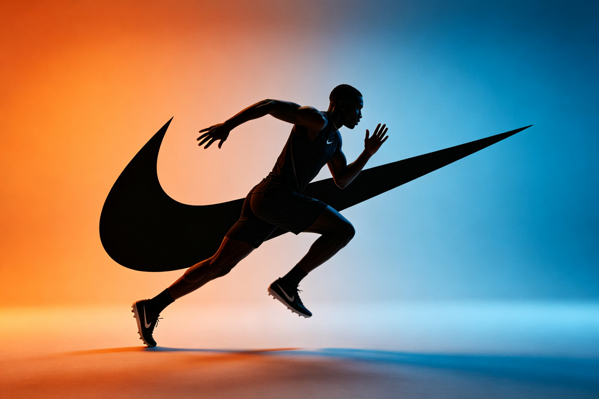

耐克品牌视觉系统 · BEA 双极情绪美学深度分析
分析对象：耐克（Nike）品牌视觉系统，1971年至今，美国 分析方法：BEA 双极情绪美学六步法 分析时间：2026-09-13 分析师：BEA 工具生成
一、情绪基调
耐克是全球最具影响力的运动品牌，以其经典的Swoosh标志和"Just Do It"口号闻名。整体感受是崇高震撼——简洁的标志带来秩序与经典，而强烈的运动张力和反叛精神带来唤醒与力量，秩序与张力在极简的视觉中达成最高级的平衡。
- 主导范式：🏔️ 崇高震撼（偏先锋反叛）
- W(T) 危极权重估计：0.58
- 第一情绪：力量、激励、反叛、超越
二、双极构成拆解
亲极元素（P+，秩序/经典）
| 维度 | 元素 | 极性强度 | 作用 |
|---|---|---|---|
| 标志 | Swoosh的流畅曲线，简洁的图形 | P+ 6 | 经典秩序，易识别易记忆 |
| 色彩 | 经典的黑白配色，简洁的色彩系统 | P+ 5 | 秩序感，不过分张扬 |
| 排版 | 简洁的字体，清晰的层级 | P+ 5 | 信息秩序，专业感 |
| 传承 | 50年的品牌历史，经典的视觉传承 | P+ 6 | 时间秩序，信任感 |
危极元素（T−，力量/反叛）
| 维度 | 元素 | 极性强度 | 作用 |
|---|---|---|---|
| 运动 | 运动员的力量感，运动的动态张力 | T− 8 | 力量唤醒，激励感 |
| 口号 | "Just Do It"的反叛精神，行动宣言 | T− 7 | 精神张力，反叛感 |
| 色彩 | 强烈的对比色，高饱和的点缀色 | T− 6 | 视觉冲击，注意力捕获 |
| 姿态 | 运动员的极限姿态，突破常规的动作 | T− 7 | 超越感，极限张力 |
主辅比与层级策略
- 主辅比：危极约58%，亲极约42%——危极主导但亲极秩序强大
- 层级策略：同向叠加（强化型）——宏观崇高（运动力量+反叛精神）+中观崇高（极限姿态+强烈对比）+微观秩序（简洁标志+经典配色），层层加码制造崇高力量，而极简的视觉秩序是压住一切张力的安全锚点——"秩序中的力量"是耐克的BEA诠释。
三、定位：张力 × 秩序 象限
🏆 高张力 × 高秩序 = 美感黄金区（崇高象限）
- 张力：极高（运动力量、反叛精神、极限姿态、强烈对比）
- 秩序：极高（简洁标志、经典配色、清晰排版、50年传承）
- 说明：耐克是崇高震撼的品牌教科书——用极简的视觉秩序承载极强的运动张力，做到"有力而不粗暴，反叛而不混乱"。它的革命性在于：把运动的力量感和反叛精神注入极简的视觉系统，让每一个消费者都能在其中找到自己的力量和超越。
四、BEA 四维评分卡
| 维度 | 得分 | 满分 | 评价 |
|---|---|---|---|
| 双极张力 | 24 | 25 | 运动力量与反叛精神的张力极强，激励感深刻 |
| 结构秩序 | 25 | 25 | 极简视觉+50年传承，秩序感极强，品牌标杆 |
| 阈值安全 | 23 | 25 | 运动张力控制在审美窗口内，无越界元素 |
| 语境适配 | 24 | 25 | 完美匹配运动品牌定位，跨时代的经典 |
| 总分 | 96 | 100 | 崇高震撼的品牌最高典范，运动精神的美学宣言 |
五、核心优点
- 极简秩序的高级感：Swoosh标志是极简设计的典范，用最少的元素表达最多的意义，"少即是多"的品牌诠释
- 运动张力的深刻表达：把运动的力量感和反叛精神注入视觉系统，张力不仅在形式，更在精神——"Just Do It"是最有力的美学宣言
- 跨时代的范式稳定性：从1971年至今，耐克始终停在崇高震撼的黄金象限，不随潮流摆动，这就是品牌经典的定义
六、可优化方向
- 多元化的张力表达：当代运动文化更加多元，耐克需要在保持经典的同时，注入更多元的运动文化表达
- 可持续的范式创新：可持续时尚是新的语境，耐克需要在运动力量与可持续之间找到新的平衡
- 数字化的秩序维护：数字时代的视觉触点更加多元，耐克需要在多平台多触点中维护视觉秩序的一致性
七、总结
耐克品牌视觉系统是BEA崇高震撼范式的品牌最高典范——用极简的视觉秩序承载极强的运动张力，做到"有力而不粗暴，反叛而不混乱"。它的革命性不仅在视觉，更在精神：在消费主义盛行的时代，它用"Just Do It"宣告了行动和超越的力量。它证明了：真正的品牌经典不是追逐潮流，而是在稳定的秩序框架内承载深刻的精神张力，让每一代消费者都能在其中找到自己的力量。这就是BEA所说的"高张力×高秩序"黄金区的品牌终极形态——潮流在变，力量永恒。
本报告由 BEA 双极情绪美学分析工具生成 · 理论作者：星空本空 · CC BY 4.0